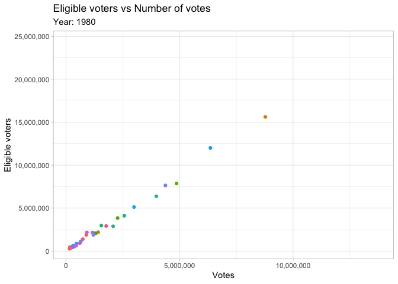

Tidy Tuesday
Tidy Tuesday is a weekly data project aimed at the R users. It is organised by the R4DS community.
It is a great way of practicing with differnt types of data and using different techniques. Wrangling, tidying, plotting and modelling different types of data.
My Attempts
Week 28
One of my attempts was in week 28 in 2018 (09/10/2018), which was voter turnout data from 1980 to 2014 for the USA. It included the number of age-eligible voters versus total ballots/votes counted by state and year. I decided to try and use the gganimate library to create an animated plot.
The animation shows the number of elgible voters versus the number of votes over time.

Code
library(tidyverse)
library(gganimate)
library(scales)
# Load data
voter_data <- read_csv("https://raw.githubusercontent.com/rfordatascience/tidytuesday/master/data/2018/2018-10-09/voter_turnout.csv")
# Remove unwanted entries
state_data <- voter_data %>%
filter(!state %in% c("United States", "United States (Excl. Louisiana)"))
# Create base plot for animation
votes_vs_eligible <- ggplot(state_data, aes(votes, eligible_voters, colour = state)) +
geom_point(show.legend = FALSE) + theme_light() +
scale_y_continuous(labels = comma_format()) +
scale_x_continuous(labels = comma_format()) +
labs(title = 'Eligible voters vs Number of votes',
subtitle = 'Year: {frame_time}',
y = 'Eligible voters', x = 'Votes') +
# extra lines needed for animation are below
transition_time(year) +
ease_aes('quartic-in-out') # determines how points will move
animate(votes_vs_eligible, fps = 7.5) # create the animation